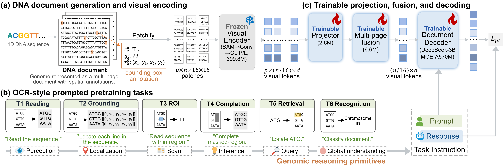
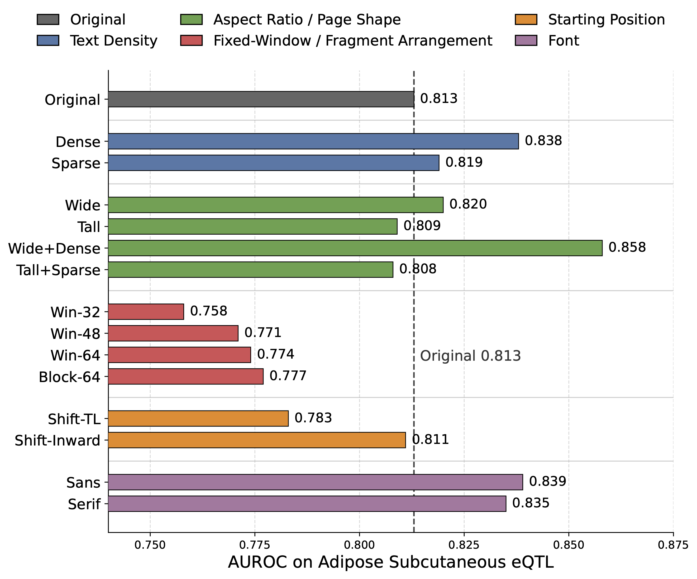
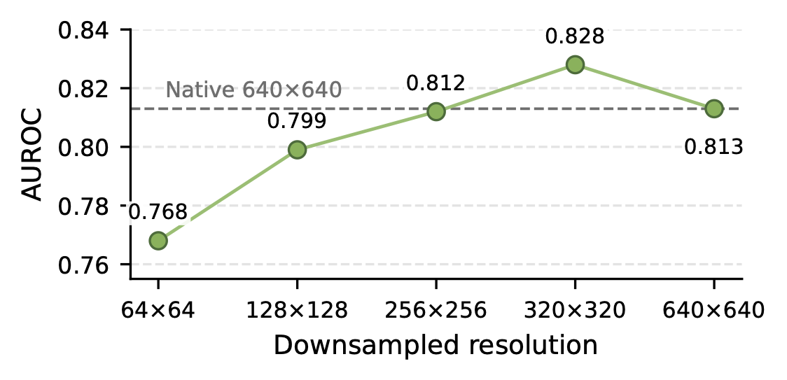
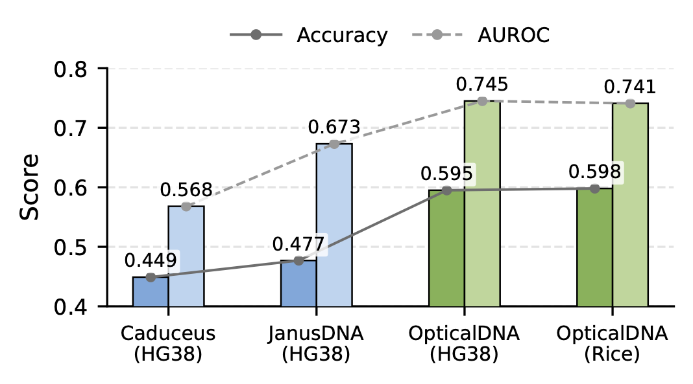

Visual DNA representation
DNA is rendered into structured multi-page images with nucleotide-level bounding boxes, linking one-dimensional genome coordinates to two-dimensional visual regions.
A large-scale electron density dataset for 3.3 million molecules, enabling accurate and efficient machine learning force fields.
NeurIPS 2025The first method to enhance molecular geometry learning with electron density images via cross-modal distillation.
IJCAI 2025The first dual-task LLM framework (ChemDual) for enhanced chemical reaction and retrosynthesis prediction through large-scale instruction data and joint optimization.
IJCAI 2025The first image-enhanced molecular graph learning framework that leverages multi-view 3D images and knowledge distillation.
IJCAI 2024OpticalDNA turns DNA sequences into structured visual documents and learns OCR-style genomic reasoning, enabling compact, reconstructible visual compression for ultra-long genomic contexts.
Sequential models spend computation scanning long low-information backgrounds. OpticalDNA converts genomic sequences into coordinate-indexed pages, making genomic reading, grounding, retrieval, and completion natural document-understanding tasks.
DNA is rendered into structured multi-page images with nucleotide-level bounding boxes, linking one-dimensional genome coordinates to two-dimensional visual regions.
A visual encoder produces compact, reconstructible tokens that preserve fine-grained sequence information while reducing the effective token budget for long inputs.
OCR-style supervision supports explicit localization, subsequence retrieval, ROI transcription, and masked-region completion through prompt-conditioned genomic tasks.
The method reframes genomic modeling as OCR-style document understanding: render, prompt, encode, decode, and reuse the learned visual DNA encoder for downstream prediction.

Overview of OpticalDNA. (a) Render a 1D genomic sequence into a multi-page DNA document with bounding-box annotations. (b) Construct six OCR-style prompted genomic tasks. (c) Pretrain a visual encoder–document decoder under prompt supervision.
Free-form DNA transcription from rendered pages.
Transcribe DNA and locate each line or block.
Read DNA text inside user-provided boxes.
Recover masked DNA regions from visual context.
Find all occurrences of a query subsequence.
Predict chromosome-level document labels.
OpticalDNA is evaluated from canonical long-range regulatory modeling to cross-subspecies generalization and whole-genome phenotype prediction.
Linear probing reaches 0.852 average AUROC using only 256K trainable parameters, outperforming JanusDNA-MLP while requiring far fewer task-specific parameters.
Rendering perturbations do not break the visual formulation: wide+dense rendering reaches 0.858 AUROC on AS eQTL, above the original 0.813 layout.
The HG38-pretrained OpticalDNA transfers strongly to rice, approaching the rice-pretrained model and clearly surpassing HG38-pretrained sequence baselines.
DNALONGBench. OpticalDNA achieves the best average AUROC on eQTL tasks while using a lightweight probing setup. Relative to JanusDNA-MLP, OpticalDNA-MLP improves the average AUROC by +3.2%; relative to JanusDNA without mid-attention, it improves by +9.6%. Average AUROC is computed over nine GTEx eQTL tissues.
| Model | Average AUROC ↑ | Trainable params | Relative note |
|---|---|---|---|
| JanusDNA w/o mid-Attn | 0.791 | 7.662M | — |
| JanusDNA-MLP w/o mid-Attn | 0.840 | 7.745M | strongest JanusDNA baseline |
| OpticalDNA Linear Probing | 0.852 | 256K | +1.4% vs. JanusDNA-MLP |
| OpticalDNA MLP | 0.867 | 1.3M–2.3M | +3.2% vs. JanusDNA-MLP |
RiceSubBench. OpticalDNA generalizes from in-domain japonica to near-, mid-, and far-OOD rice subspecies, with especially clear accuracy gains on rufipogon, barthii, and glaberrima. Accuracy / AUROC are shown below. Percentage badges report relative gains over the strongest non-OpticalDNA baseline for each metric; for glaberrima AUROC, OpticalDNA is slightly below LucaOne but still improves over Evo-2. OpticalDNA uses 409M parameters, compared with 7B for Evo-2 and 1.8B for LucaOne.
| Model | japonica In-domain | aus Near-OOD | rufipogon Mid-OOD | barthii Far-OOD | glaberrima Far-OOD |
|---|---|---|---|---|---|
| Evo-2 (7B) | 0.486 / 0.700 | 0.509 / 0.714 | 0.500 / 0.714 | 0.532 / 0.725 | 0.489 / 0.705 |
| LucaOne (1.8B) | 0.510 / 0.703 | 0.551 / 0.723 | 0.589 / 0.760 | 0.556 / 0.745 | 0.526 / 0.736 |
| OpticalDNA (409M) | 0.590 / 0.739+15.7% Acc+5.1% AUROC | 0.556 / 0.725+0.9% Acc+0.3% AUROC | 0.639 / 0.762+8.5% Acc+0.3% AUROC | 0.608 / 0.747+9.4% Acc+0.3% AUROC | 0.599 / 0.731+13.9% Acc+3.7% AUROC vs. Evo-2 |
RMSE and inference time under ~400M-base rice genome inputs. The original paper reports OpticalDNA inference time as 12.3 minutes.
| Model | TGW RMSE ↓ | LRI-15SZ RMSE ↓ | Inference time ↓ | Speed note |
|---|---|---|---|---|
| Evo-2 (7B) | 3.056 | 9.617 | 5h 40m | OpticalDNA is 27.6× faster |
| LucaOne (1.8B) | 8.817 | 9.740 | 32.5 min | OpticalDNA is 2.6× faster |
| OpticalDNA (409M) | 2.952best | 9.531best | 12.3 minfastest | best RMSE on both traits |

Interpretability. Grad-CAM highlights region-level attributions and biologically meaningful splice signals, showing that OpticalDNA can localize relevant genomic evidence.
Average AUROC on nine eQTL tasks changes minimally while the visual-token compression ratio increases.
| Resolution | #Pages | #Tokens / page | Compression ratio | Average AUROC ↑ |
|---|---|---|---|---|
| 512 | 370 | 64 | 19.0 | 0.849 |
| 640 | 226 | 100 | 19.9 | 0.852best |
| 1024 | 84 | 256 | 20.9 | 0.851 |
| 1280 | 53 | 400 | 21.2 | 0.849 |
Key finding. OpticalDNA remains robust under realistic rendering perturbations, including text density, aspect ratio, starting position, and font changes. Dense and wide+dense layouts even improve over the original AS eQTL AUROC, suggesting that the OCR-style formulation captures genomic content rather than overfitting to a brittle page style.

Figure 5. Common formatting changes preserve performance; wide+dense and font-variant renderings outperform the original layout, while rigid fixed-window layouts degrade performance.

Figure 6. OpticalDNA remains stable under moderate downsampling and degrades mainly at extreme low resolution, supporting the robustness of visual DNA tokens.
Key finding. HG38-pretrained OpticalDNA transfers to rice far better than HG38-pretrained sequence baselines and nearly matches rice-pretrained OpticalDNA, indicating that the gain comes from a transferable OCR-style visual genomic representation rather than only domain-matched pretraining.

Figure 7. OpticalDNA-HG38 clearly surpasses HG38-pretrained sequence baselines and approaches the rice-pretrained OpticalDNA model.
| Model | Accuracy ↑ | AUROC ↑ | Finding |
|---|---|---|---|
| Caduceus (HG38) | 0.449 | 0.568 | HG38-pretrained sequence baseline |
| JanusDNA (HG38) | 0.477 | 0.673 | stronger HG38-pretrained baseline |
| OpticalDNA (HG38) | 0.595+24.7%vs. JanusDNA | 0.745+10.7%vs. JanusDNA | +32.5% Acc and +31.2% AUROC vs. Caduceus |
| OpticalDNA (Rice) | 0.598+25.4%vs. JanusDNA | 0.741+10.1%vs. JanusDNA | +0.5% Acc and −0.5% AUROC vs. OpticalDNA-HG38 |
Instead of treating DNA as a flat token sequence, OpticalDNA models genomes as coordinate-indexed visual documents.
Compact visual tokens reduce the effective token count and make ultra-long sequence prediction more efficient.
The visual formulation makes genomic regions explicit, supporting localization, retrieval, and evidence inspection.
@inproceedings{xiang2026rethinking,
title = {Rethinking Genomic Modeling Through Optical Character Recognition},
author = {Xiang, Hongxin and Ma, Pengsen and Cao, Yunkang and Yu, Di and Chen, Haowen and Yang, Xinyu and Zeng, Xiangxiang},
booktitle = {Proceedings of the 43rd International Conference on Machine Learning},
year = {2026},
url = {https://openreview.net/forum?id=nggzekChuU}
}
@misc{xiang2026rethinkinggenomicmodelingoptical,
title = {Rethinking Genomic Modeling Through Optical Character Recognition},
author = {Hongxin Xiang and Pengsen Ma and Yunkang Cao and Di Yu and Haowen Chen and Xinyu Yang and Xiangxiang Zeng},
year = {2026},
eprint = {2602.02014},
archivePrefix = {arXiv},
primaryClass = {cs.CV},
url = {https://arxiv.org/abs/2602.02014}
}